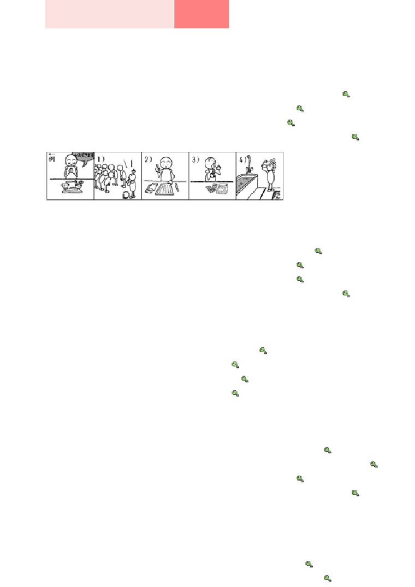

第４６課
課:46 (頁:1/9)
ことば
1. やきます Ⅰ
焼きます
燒，烤（麵包、魚、肉）
2. わたします Ⅰ
渡します
遞交、交給
3. かえって きます Ⅲ 帰って 来ます
回來（回到原來的場所）
4.
でます
Ⅱ
出ます
離開，出發，〔巴士〕發車
［バスが～］
5. るす
留守
不在家
6. たくはいびん
宅配便
快遞
7. げんいん
原因
原因
8. ちゅうしゃ
注射
注射，打針
9. しょくよく
食欲
食慾
10. パンフレット
簡介
11. ステレオ
音響
12. こちら
我們這邊，這邊（說話人這邊）
13. ～の ところ
～の 所
～的地方
14. ちょうど
正好，剛好
15. たったいま
たった今
剛才（和過去式一起使用）
16. いま いいでしょうか。 今 いいでしょうか。 現在可以嗎？
かい わ
会話
ガスサービスセンター
瓦斯服務中心
ガスレンジ
瓦斯爐
ぐ あい
具合
情況
さま
どちら様でしょうか。
您是哪位？
む
向かいます Ⅰ
向～去
ま
お待たせしました。
您久等了。
よ
もの
…読み物…………………………………………………………………………………
ち しき
知識
知識
ほう こ
宝庫
寶庫
て
はい
じょう ほう
手に 入ります ［情報が～］ Ⅰ
到手〔獲得資訊〕
課:46 (頁:2/9)
システム
系統
たと
例えば
例如
キーワード
關鍵詞
いち ぶ ぶん
一部分
部分
にゅうりょく
入力します Ⅲ
輸入
びょう
秒
秒
で
ほん
出ます［本が～］ Ⅱ
出，出版〔書〕
…………………………………………………………………………………………………………………
ぶん けい
文型
かい ぎ
いま
はじ
1.
会議は 今から 始まる ところです。
かれ
がつ
だい がく
そつぎょう
2.
彼は 3月に 大学を 卒業した ばかりです。
しょ るい
そく たつ
だ
つ
3.
書類は 速達で 出しましたから、あした 着く はずです。
れい ぶん
例文
た なか
いま
1.
もしもし、田中ですが、今 いいでしょうか。
いま
で
…すみません。 今から 出かける ところなんです。
かえ
でん わ
帰ったら、こちらから 電話します。
こ しょう
げん いん
2.
故障の 原因は わかりましたか。
いま
しら
…いいえ、今 調べて いる ところです。
わた なべ
3.
渡辺さんは いますか。
いま
かえ
…あ、たった今 帰った ところです。
ところ
まだ エレベーターの 所に いるかも しれません。
し ごと
4.
仕事は どうですか。
せん げつ
かい しゃ
はい
…先月 会社に 入った ばかりですから、まだ よく
わかりません。
せんしゅう
か
5.
この ビデオカメラ、先週 買った ばかりなのに、もう
うご
動かないんです。
み
…じゃ、ちょっと 見せて ください。
ねつ
さ
6.
テレサの 熱は 下がるでしょうか。
いま ちゅうしゃ
じ かん ご
さ
…今 注射を しましたから、3時間後には 下がる はずです。
かい わ
会話
つ
もうすぐ 着く はずです
かかり いん
係員
：
はい、ガスサービスセンターで ございます。
課:46 (頁:3/9)
タワポン：
あのう、ガスレンジの 調子が おかしいんですが……。
かかり いん
ぐ あい
係員
：
どんな 具合ですか。
せん しゅう なお
ひ
き
タワポン：
先週 直した ばかりなのに、また 火が すぐ 消えて
あぶ
はや
み
き
しまうんです。 危ないので、早く 見に 来て
くれませんか。
かかり いん
じ
い
おも
係員
：
わかりました。 5時ごろには 行けると 思います。
じゅうしょ
な まえ
ねが
ご住所と お名前を お願いします。
------------------------------
じ
み
き
タワポン：
もしもし、5時ごろに ガスレンジを 見に 来て くれる
はずなんですが、まだですか。
かかり いん
さま
係員
：
すみません。 どちら様でしょうか。
タワポン：
タワポンと いいます。
かかり いん
ま
かかり いん
れん らく
係員
：
ちょっと お待ち ください。 係員に 連絡しますから。
------------------------------
かかり いん
ま
いま
む
係員
：
お待たせしました。 今 そちらに 向かって いる
ぷん
ま
ところです。 あと 10分ほど お待ち ください。
れん しゅう
練習 Ａ
いま
し あい
1.
ちょうど 今から
試合が
はじまる
ところです。
でかける
みんなで
しょくじする
いま
へ や
2.
今
部屋を
かたづけて いる
ところです。
ろん ぶん
論文を
かいて いる
アパートを
さがして いる
いま
3.
たった今
おきた
ところです。
バスが
でた
うちへ
かえって きた
はやし
せん げつ
かい しゃ
4.
林さんは 先月 この 会社に
はいった
ばかりです。
ひる
わたしは さっき 昼ごはんを
たべた
き
この コピー機は きのう
しゅうりした
に もつ
5.
荷物は あした
とどく
はずです。
さけ
グプタさんは お酒を
のまない

か ちょう
ご
課:46 (頁:4/9)
課長は ドイツ語が
じょうずな
あの スーパーは あしたは
やすみの
れん しゅう
練習 Ｂ
れい
ひる
た
1. 例： 昼ごはんは もう 食べましたか。（ これから ）
た
→ いいえ、これから 食べる ところです。
し あい
はじ
いま
1)
試合は もう 始まりましたか。（ ちょうど 今から ） →
へん じ
か
2)
返事は もう 書きましたか。（ これから ） →
くすり
の
3)
薬は もう 飲みましたか。（ これから ） →
はい
いま
4)
おふろには もう 入りましたか。（ ちょうど 今から ） →
れい
2.
例： コピーは もう できましたか。（ やります ）
いま
→ いいえ、今 やって いる ところです。
こ しょう
げん いん
しら
1)
故障の 原因は わかりましたか。（ 調べます ） →
や
や
2)
パンは もう 焼けましたか。（ 焼きます ） →
ろん ぶん
だ
か
3)
論文は もう 出しましたか。（ 書きます ） →
けっ こん しき
ひ
き
そう だん
4)
結婚式の 日は もう 決めましたか。（ 相談します ） →
れい
お がわ
かえ
3.
例： 小川さんは もう 帰りましたか。
いま
かえ
→ はい、たった今 帰った ところです。
じ
で
1)
8時の バスは もう 出ましたか。 →
た ろう くん
ね
2)
太郎君は もう 寝ましたか。 →
かい ぎ
お
3)
会議は もう 終わりましたか。 →
しょ るい
とど
4)
書類は もう 届きましたか。 →
れい
お
しょくよく
4.
例： さっき 起きました・食欲が ありません
お
しょくよく
→ さっき 起きた ばかりですから、食欲が ありません。
せんしゅう たい いん
1)
先週 退院しました・まだ スポーツは できません →
がつ
かい しゃ
はい
きゅうりょう
やす
2)
ことしの 4月に 会社に 入りました・まだ 給料は 安いです →
こ
ね
しず
3)
子どもが 寝ました・静かに して ください →
せん たく
かわ
4)
さっき 洗濯しました・タオルは まだ 乾いて いません →
れい
せん げつ
か
こわ
5.
例： この ステレオは 先月 買いました・もう 壊れました
せん げつ
か
こわ
→
この ステレオは 先月 買った ばかりなのに、もう 壊れて
しまいました。
な まえ
き
わす
1)
さっき 名前を 聞きました・もう 忘れました →
せん しゅう
つか
2)
先週 ボーナスを もらいました・もう 使いました →
あさ くつ
みが
よご
課:46 (頁:5/9)
3)
朝 靴を 磨きました・もう 汚れました →
ふたり
きょ ねん
けっ こん
り こん
4)
あの 二人は 去年 結婚しました・もう 離婚しました →
れい
に もつ
つ
6.
例： 荷物は きょう 着きますか。
たく はい びん
おく
（ きのう 宅配便で 送りました ）
たく はい びん
おく
つ
→ ええ、きのう 宅配便で 送りましたから、着く はずです。
かの じよ
く
1)
彼女は 来るでしょうか。
しゅっせき
へん じ
（ きのう 出席の 返事を もらいました ） →
2)
あの レストランは おいしいですか。
あん ない しょ
か
（ 案内書に 書いて あります ） →
となり
ひと
る す
3)
隣の 人は 留守ですか。
げつ
りょ こう
い
い
（ 1か月ほど 旅行に 行くと 言って いました ） →
え
じょうず
4)
カリナさんは 絵が 上手ですか。
び じゅつ
べんきょう
（ 美術を 勉強して います ） →
れん しゅう
練習 Ｃ
なつ やす
い
1. Ａ: 夏休み、どこか 行きますか。
がい こく
い
おも
Ｂ: ええ。 外国へ 行こうと 思って いるんですが……。
い
Ａ: いいですねえ。 どこへ 行くんですか。
いま かんが
Ｂ: 今 考えて いる ところです。
りょ こう しゃ
ひと
1)
旅行社の 人に いろいろ
き
聞きます
いろいろ パンフレットを
2)
み
見ます
だい がく
2. Ａ: 大学は どうですか。
せん げつ
じゅぎょう
はじ
Ｂ: 先月 授業が 始まった ばかりですから、
まだ よく わかりません。
はじ
たい へん
Ａ:
そうですね。 初めは 大変かも しれませんが、
がん ば
頑張って ください。
Ｂ: はい。
けんきゅう
1) 研究
だい がく いん
はい
大学院に 入ります
あたら
し ごと
2) 新しい 仕事
はじ
始めます
く
ミラーさん、きょう 来るでしょうか。
3. Ａ:
く
でん わ
課:46 (頁:6/9)
来る はずですよ。 きのう 電話が ありましたから。
Ｂ:
だいじょう ぶ
Ａ: じゃ、大丈夫ですね。
みち
1) 道が わかります
ち ず
きのう 地図を
わた
渡しました
ひとり
こ
2) 一人で 来られます
き
まえに 来た ことが
あります
もん だい
問題
れい
いま
1.
1)
…例： いいえ、今からするところです。
れい
に ほん ご
しゅくだい
2)
…例： 日本語の宿題をしているところです。
2.
1)
( ○ )
2)
( ○ )
3)
( ○ )
4)
( × )
5)
( × )
れい
ひる
た
3. 例： もう 昼ごはんを 食べましたか。
いま
た
…いいえ、今から （ 食べる ） ところです。
で
1)
ワットさんは もう 出かけましたか。
いま
で
…はい、たった今 （ 出かけた ） ところです。
はじ
2)
コンサートは もう 始まりましたか。
はじ
いそ
…これから （ 始まる ） ところですから、急いで ください。
か じ
げん いん
しら
3)
火事の 原因は 調べましたか。
いま
しら
…今 （ 調べている ） ところです。
かい ぎ
し りょう
4)
会議の 資料は もう コピーしましたか。
いま
た なか
すこ
ま
…今 田中さんが （ コピーしている ） ところなので、もう 少し 待って
ください。
れい
例： この パン、おいしそうですね。
4.
や
…ええ、さっき （ 焼いた ） ばかりなんですよ。
た
どうぞ 食べて ください。
に ほん
き
1)
いつ 日本へ 来ましたか。
しゅうかん
き
…2週間まえに （ 来た ） ばかりです。
くるま
あたら
2)
いい 車ですね。新しいんですか。
せんしゅう
か
…ええ、先週 （ 買った ） ばかりなんです。
こ
3)
お子さんは おいくつですか。
げつ
せん げつ
う
…1か月です。先月 （ 生まれた ） ばかりです。
4)
コーヒーは いかがですか。
の
…いいえ、けっこうです。さっき （ 飲んだ ） ばかりですから。
れい
じ
で
い
5.
例： タワポンさんは 2時に うちを 出ると 言って いましたから、
じ
つ
課:46 (頁:7/9)
3時ごろ ここに （ 着く ） はずです。
ひつ よう
い しや
つ
必要です おいしいです 医者です わかります 着きます
た なか
ち ず
わた
みち
1)
田中さんに きのう うちの 地図を かいて 渡しましたから、道は
（ わかる ） はずです。
ぶ ちょう
むすこ
い しゃ
2)
部長の 息子さんは （ 医者の ） はずです。
よ やく
ひつ よう
3)
あの レストランは 予約が （ 必要な ） はずです。
りょう り
つく
4)
この 料理は ミラーさんが 作りましたから、（ おいしい ） はずです。
でん し と しょ かん
6.
電子図書館
と しょ かん
ち しき
ほう こ
じょう ほう
あつ
図書館は 知識の 宝庫です。 いろいろな 情報が 集められて
と しょ かん
い
ひつ よう
ほん
て
はい
います。 図書館へ 行けば、いつでも 必要な 本が 手に 入る
と しょ かん
ほ
ほん
しら
い
はずです。 しかし、図書館に 欲しい 本が ない ときや、調べに 行く
じ かん
でん し と しょ かん
やく
時間が ない ときが あります。 そんな とき、電子図書館が 役に
た
立ちます。
でん し と しょ かん
つか
と しょ かん
り よう
電子図書館は パソコンを 使って 図書館を 利用する システムです。
たと
ほん
な まえ
いち ぶ ぶん
にゅうりょく
ほ
例えば、キーワードや 本の 名前の 一部分を 入力すれば、欲しい
ほん
しら
じ しょ
さつ
びょう
だ
ず
本が すぐ 調べられます。 辞書 １冊が ２秒で 出せるし、図や
しゃ しん
かん たん
み
で
あたら
ほん
写真も 簡単に 見られます。 出た ばかりの 新しい 本も すぐ
み
でん し と しょ かん
り よう
見られます。 電子図書館なら、いつでも どこででも 利用 できます。
さい きん
ひと
ほん
よ
い
最近 人は 本を 読まなく なったと 言われて いますが、パソコンを
つか
と しょ かん
り よう
ひと
ふ
使って 図書館を 利用する 人が 増えるかも しれません。
と しょ かん
い
よ
ほん
て
はい
1)
（ × ）図書館へ 行けば、いつでも 読みたい 本が 手に 入ります。
でん し と しょ かん
ほん
さが
み
2)
（ ○ ）電子図書館は パソコンで 本を 探して、見る ことが できる
システムです。
でん し と しょ かん
ほん
さが
ほん
な まえ
ぜん ぶ
3)
（ × ）電子図書館で 本を 探す とき、その 本の 名前が 全部
み
わからなければ、見つけられません。
と しょ かん
やす
ひ
でん し と しょ かん
つか
4)
（ × ）図書館が 休みの 日は 電子図書館が 使えません。
文法
１
動詞字典形
動詞 て形 いる } ところです
動詞
た
形
「ところ」本來是表示場所的詞，但也表示時間的位置。本課中學的「ところ」
是後者，用於強調某個動作或事件在進行過程中，現在處於什麼樣的局面時。
1)
動詞字典形 ところです
表示某件事即將開始前，或某件事開始的意思。和「これから
」「［ちょうど］
いまから」等詞一起使用時，意思更加清楚。
ひる
た
課:46 (頁:8/9)
①昼ごはんは もう 食べましたか。
た
…いいえ、これから 食べる ところです。
吃過午飯了嗎？
…還沒有，現在正準備要吃。
かい ぎ
はじ
②会議は もう 始まりましたか。
いま
はじ
…いいえ、 今から 始まる ところです。
會議開始了嗎？
…還沒有，剛要開始。
2)
動詞 て形 いる ところです
表示某個動作正在進行中，常和「いま」一起使用。
こ しょう
げん いん
③故障の 原因が わかりましたか。
いま
しら
…いいえ、 今 調べて いる ところです。
故障的原因清楚了嗎？
…還不清楚，現在正在調查。
3)
動詞 た形 ところです
表示某件事剛剛結束，常和「たったいま」等副詞一起使用。
わた なべ
④渡辺さんは いますか。
いま
かえ
…あ、たった 今 帰った ところです。
ところ
まだ エレベーターの 所に いるかも しれません。
渡邊小姐在嗎？
…啊，她剛回去。
也許還在電梯附近。
いま
で
⑤たった 今 バスが 出た ところです。
公車剛開走。
〔註〕「～ところです」是名詞句，可以接續各種句型。參考⑥。
た なか
いま
⑥もしもし 田中ですが、 今 いいでしょうか。
いま
で
…すみません。 今から 出かける ところなんです。
喂喂，我是田中，現在方便嗎？
…對不起，我正要出門。
２.
動詞 た形 ばかりです
這個句型表示某個動成進行過，或者某個事件發生後沒過多久的說話者心情。不
管實際上時間經過的長短，只要說話者覺得短就可以用這個句型，這一點和表示
動作剛剛完成的「動詞 形 ところです」不同。
ひる
た
⑦さっき 昼ごはんを 食べた ばかりです。
我剛吃過午飯。
き むら
せん げつ
かい しゃ
はい
⑧木村さんは 先月 この 会社に 入った ばかりです。
木村先生上個月剛進這家公司。
〔註〕「～ばかりです」是名詞句，可以接續各種句型。參考⑨。
せん しゅう
か
ちょう し
⑨この ビデオは 先週 買った ばかりなのに、 調子が おかしいです。
這台攝影機上個月才買的，狀態卻很差。
３
動詞字典形
課:46 (頁:9/9)
動詞 ない形 ない
い形容詞（ ～い） はずです
な形容詞 な
}
名詞
の
這個句型用於說話者按照某種依據，很自信地陳述自己所下的判斷時。
く
⑩ミラーさんは きょう 来るでしょうか。
く
でん わ
…来る はずですよ。 きのう 電話が ありましたから。
米勒先生今天會來嗎？
…應該會來的，昨天他打過電話。
在⑩
中，“昨天打過電話”是判斷的依據，按照這個依據，說話者自己下了“米
勒先生會來”這個判斷，對此判斷的自信是藉著「～はずです
」來表達的。